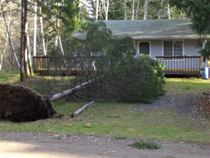

|
12/21/06 3:15 pm - Power on the island was restored shortly after 2 pm. If your house still does not have power, you can report the outage to Peninsula Light's Automated Outage Reporting System at 253-857-5950.
12/21/06 12:15 pm - Patty Jones called and said that Peninslula Light trucks are on the island. Service should be restored by tonight or tomorrow. Patty also suggested that members be reminded of the dangers of consuming inadequately refrigerated food. The News Tribune has this article on when to use or toss food. 12/18/06 - Peninsula Light has given Island Manager Doug Allen an estimate of Wednesday night for restoration of island power. Island phones are working and the ferry is operating with generator power for the ramps. Click here for a 12/18/06 report from Lynne Klug. |
|  |
|
This is a picture of my neighbor Dorian's house at 213 E. Madrona. A very
polite tree fell in her driveway, missing everything. The top of the tree
barely touches the deck, and the root ball didn't even disturb the water
shut-off that was right below the tree. Lynne Klug (12/18)
|